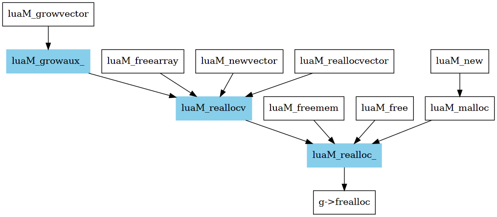

memory
内存管理对所有程序都很关键，对于动态语言更是如此。
lua 是单线程程序，即使在内部实现了协程，但内存还是统一管理的。
内存回收使用 gc 算法，是非常重要的模块，而相对地，内存分配就显得非常简单。
本章就讲解 lua 源码中关于内存分配的内容。
1 core api
内存分配，无外乎涉及 3 个基础 api
- malloc
- realloc
- free
对于了解操作系统和 C 语言的大家都不陌生。
lua 内部将其简化为 1 个 api，定义原型为 lua_Alloc
63: /* 64: ** prototype for memory-allocation functions 65: */ 66: typedef void * (*lua_Alloc) (void *ud, void *ptr, size_t osize, size_t nsize);
这是一个函数指针，规定其行为需遵从如下约定
23: /* 24: ** About the realloc function: 25: ** void * frealloc (void *ud, void *ptr, size_t osize, size_t nsize); 26: ** (`osize' is the old size, `nsize' is the new size) 27: ** 28: ** Lua ensures that (ptr == NULL) iff (osize == 0). 29: ** 30: ** * frealloc(ud, NULL, 0, x) creates a new block of size `x' 31: ** 32: ** * frealloc(ud, p, x, 0) frees the block `p' 33: ** (in this specific case, frealloc must return NULL). 34: ** particularly, frealloc(ud, NULL, 0, 0) does nothing 35: ** (which is equivalent to free(NULL) in ANSI C) 36: ** 37: ** frealloc returns NULL if it cannot create or reallocate the area 38: ** (any reallocation to an equal or smaller size cannot fail!) 39: */
简单的说，就是根据参数的不同，将 3 个基础 api 的功能用 1 个 api 来表示
- malloc，
frealloc(ud, NULL, 0, ns)，分配大小为 ns 的内存，返回头地址 - realloc，
frealloc(ud, p, os, ns)，变更 p 开始的内存块大小从 os 到 ns，失败返回 NULL - free，
frealloc(ud, p, os, 0)，回收以 p 开始的 os 大小的内存块，返回 NULL
lua 默认提供一个符合约定的 frealloc 函数供内部使用，可以看到它是非常纯粹的
627: static void *l_alloc (void *ud, void *ptr, size_t osize, size_t nsize) { 628: (void)ud; 629: (void)osize; 630: if (nsize == 0) { 631: free(ptr); 632: return NULL; 633: } 634: else 635: return realloc(ptr, nsize); 636: }
1.1 about global state
在 overview 章节，简单提到了 global_State ，字面意义上理解，它和全局的状态相关。
这里就是它的一个应用方面，记录内存分配相关的状态。
65: /* 66: ** `global state', shared by all threads of this state 67: */ 68: typedef struct global_State { 69: stringtable strt; /* hash table for strings */ 70: lua_Alloc frealloc; /* function to reallocate memory */ (fa) 71: void *ud; /* auxiliary data to `frealloc' */ (ud) 72: lu_byte currentwhite; 73: lu_byte gcstate; /* state of garbage collector */ 74: int sweepstrgc; /* position of sweep in `strt' */ 75: GCObject *rootgc; /* list of all collectable objects */ 76: GCObject **sweepgc; /* position of sweep in `rootgc' */ 77: GCObject *gray; /* list of gray objects */ 78: GCObject *grayagain; /* list of objects to be traversed atomically */ 79: GCObject *weak; /* list of weak tables (to be cleared) */ 80: GCObject *tmudata; /* last element of list of userdata to be GC */ 81: Mbuffer buff; /* temporary buffer for string concatentation */ 82: lu_mem GCthreshold; 83: lu_mem totalbytes; /* number of bytes currently allocated */ (tb) 84: lu_mem estimate; /* an estimate of number of bytes actually in use */ 85: lu_mem gcdept; /* how much GC is `behind schedule' */ 86: int gcpause; /* size of pause between successive GCs */ 87: int gcstepmul; /* GC `granularity' */ 88: lua_CFunction panic; /* to be called in unprotected errors */ 89: TValue l_registry; 90: struct lua_State *mainthread; 91: UpVal uvhead; /* head of double-linked list of all open upvalues */ 92: struct Table *mt[NUM_TAGS]; /* metatables for basic types */ 93: TString *tmname[TM_N]; /* array with tag-method names */ 94: } global_State;
- frealloc 引用内部的内存分配函数，即上面提到的
l_alloc - ud 引用 frealloc 函数的第一个参数，提供辅助数据，用于用户自定义
- totalbytes 记录已分配的总内存大小
在了解 global_State 相关字段后，就不难理解 lua 在 c api 层面提供的相关接口，
使用户自定义内存管理函数。
1007: LUA_API lua_Alloc lua_getallocf (lua_State *L, void **ud) { 1008: lua_Alloc f; 1009: lua_lock(L); 1010: if (ud) *ud = G(L)->ud; 1011: f = G(L)->frealloc; 1012: lua_unlock(L); 1013: return f; 1014: } 1015: 1016: 1017: LUA_API void lua_setallocf (lua_State *L, lua_Alloc f, void *ud) { 1018: lua_lock(L); 1019: G(L)->ud = ud; 1020: G(L)->frealloc = f; 1021: lua_unlock(L); 1022: }
2 generic api
核心 api 定义之后，其它上层方法不过是对它的封装。

lmem.h 对外提供了诸多函数和宏，依赖关系如图示，这里简要介绍图中标识的 3 个方法，其余留给读者自行阅读。
2.1 luaM_realloc_
对核心 api 进行了封装，检测函数错误，以及计算 totalbytes，为其它方法提供了基础。
73: /* 74: ** generic allocation routine. 75: */ 76: void *luaM_realloc_ (lua_State *L, void *block, size_t osize, size_t nsize) { 77: global_State *g = G(L); 78: lua_assert((osize == 0) == (block == NULL)); 79: block = (*g->frealloc)(g->ud, block, osize, nsize); 80: if (block == NULL && nsize > 0) 81: luaD_throw(L, LUA_ERRMEM); 82: lua_assert((nsize == 0) == (block == NULL)); 83: g->totalbytes = (g->totalbytes - osize) + nsize; 84: return block; 85: }
2.2 luaM_rellocv
这个方法是一个宏，其中参数含义为
- L ->
lua_State - b -> block pointer
- on -> old number n
- n -> new number n
- e -> elem size
19: #define luaM_reallocv(L,b,on,n,e) \ 20: ((cast(size_t, (n)+1) <= MAX_SIZET/(e)) ? /* +1 to avoid warnings */ \ 21: luaM_realloc_(L, (b), (on)*(e), (n)*(e)) : \ 22: luaM_toobig(L))
可以看出，这个宏在 luaM_realloc_ 的基础上，方便对多元素数组进行内存分配，省去重复手动计算内存大小的困扰。
其中有一个细节，使用 n+1 和 MAX_SIZET/e 进行比较，而非使用 (n+1) * e 和 MAX_SIZET 进行比较，
因为 size_t 是无符号类型，先进行除法来避免比较时溢出。
2.3 luaM_growaux_
这个方法在 luaM_rellocv 的基础上，添加了 limit 的限制。
最小不能小于 4， 最大不能超过 limit，按 2 倍速度进行内存 grow，适用于管理 类 vector 结构 。
46: void *luaM_growaux_ (lua_State *L, void *block, int *size, size_t size_elems, 47: int limit, const char *errormsg) { 48: void *newblock; 49: int newsize; 50: if (*size >= limit/2) { /* cannot double it? */ 51: if (*size >= limit) /* cannot grow even a little? */ 52: luaG_runerror(L, errormsg); 53: newsize = limit; /* still have at least one free place */ 54: } 55: else { 56: newsize = (*size)*2; 57: if (newsize < MINSIZEARRAY) 58: newsize = MINSIZEARRAY; /* minimum size */ 59: } 60: newblock = luaM_reallocv(L, block, *size, newsize, size_elems); 61: *size = newsize; /* update only when everything else is OK */ 62: return newblock; 63: }
3 practice
本章并不复杂，明确了上面的基础，剩下的方法并不难理解。
| 文件 | 建议 | 描述 |
|---|---|---|
| lmem.h | 仔细阅读 | 关于内存分配的全部方法 |
| lmem.c | 仔细阅读 | 相关函数实现 |